SKonnect
SK Puerto Princesa
Transparent Governance Platform
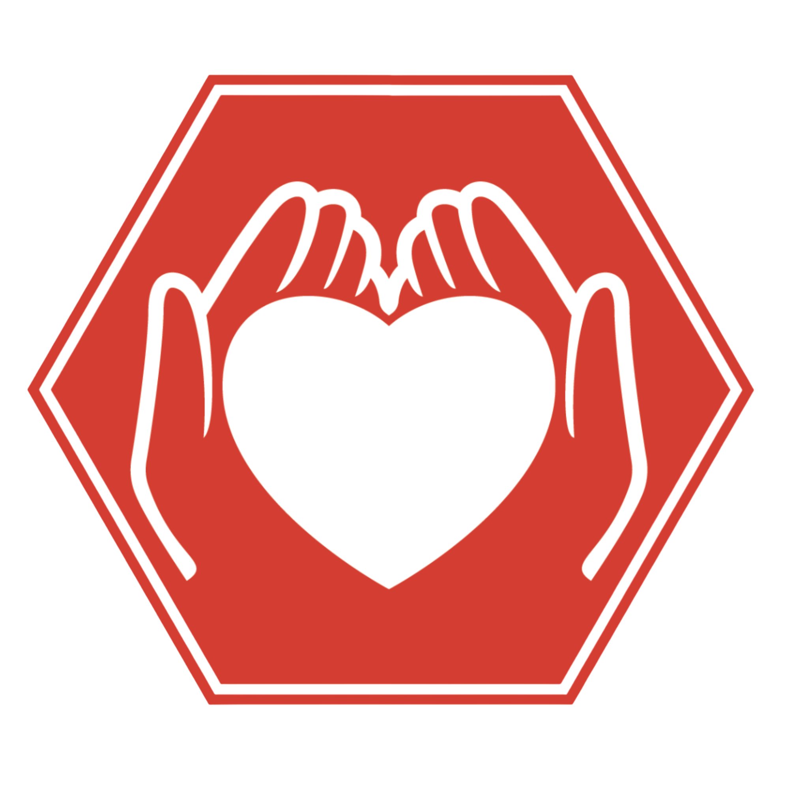
HEALTH ACTIVITIES
Platform Framework
Functional Features & Architecture
1. Dual-Path User Navigation
- Transparency vs. Accomplishments: The platform offers users two distinct journeys right from the landing page: view "Action Plans & Budgets" or view actual "Accomplishment Reports."
- Localized Barangay Filtering: A dedicated selection interface allows users to view data specific to their jurisdiction, ensuring highly relevant information.
2. Transparency & Accountability
- 10 Centers of Participation Grid: An interactive menu perfectly aligned with the Philippine Youth Development Plan.
- Dynamic Data Tables: An integrated database that instantly populates categorized data (PPAS, Expected Results, Total Budgets, and Responsible Committees) without loading new web pages.
3. Interactive Reporting
- Chronological Timeline: A dedicated reporting screen that lists completed projects in execution order.
- Click-to-Expand Accordion UI: Events are hidden in sleek banners. Users click to expand details, revealing descriptions and visual evidence (posters/photos) to prevent screen clutter.
4. Advanced UI/UX
- Animated Dashboard: Features a dynamic glassmorphism display cycling through the 10 Centers of Participation.
- Auto-Scaling Custom Graphics: The system automatically accepts and centers custom logos/posters without distorting.
- Smart Contrast System: Dark gradient overlays dynamically apply behind text and logos, ensuring readability regardless of background color.
5. Government Standardization
- Official GOV.PH Footer: The platform concludes with the standard Republic of the Philippines web footer.
- Institutional Trust: Integrates official links to the Office of the President, Senate, and Open Data Portals to establish immediate authority.
SKonnect
SK Puerto Princesa
Select Barangay for Transparency Plan
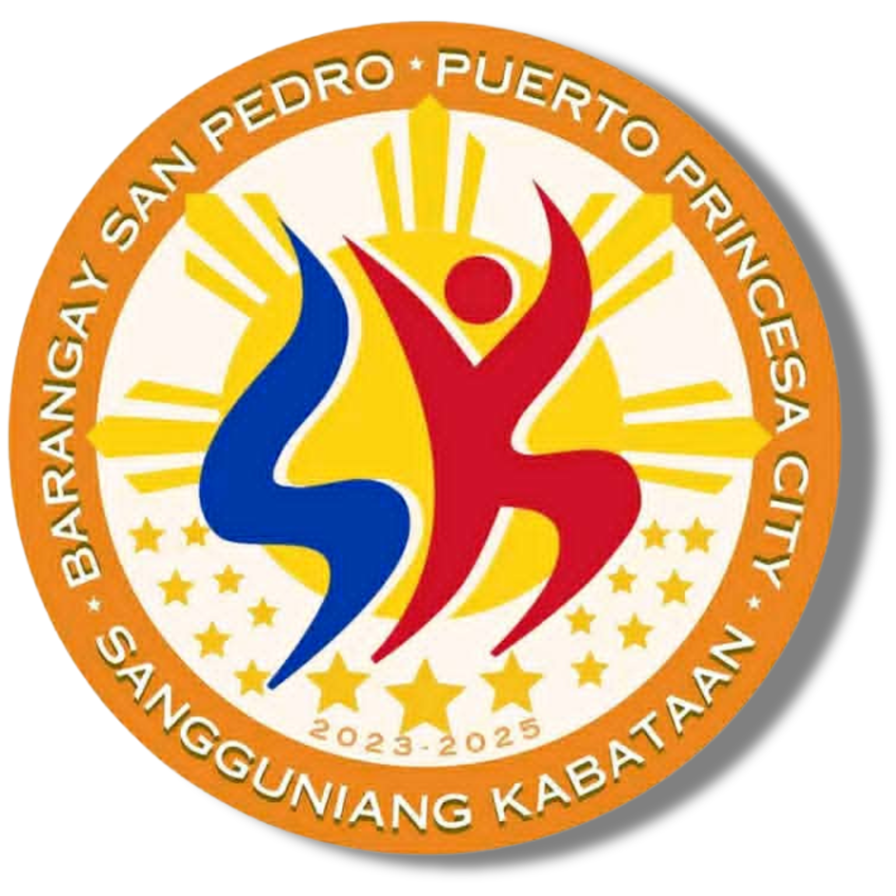
SK San Pedro
AY 2025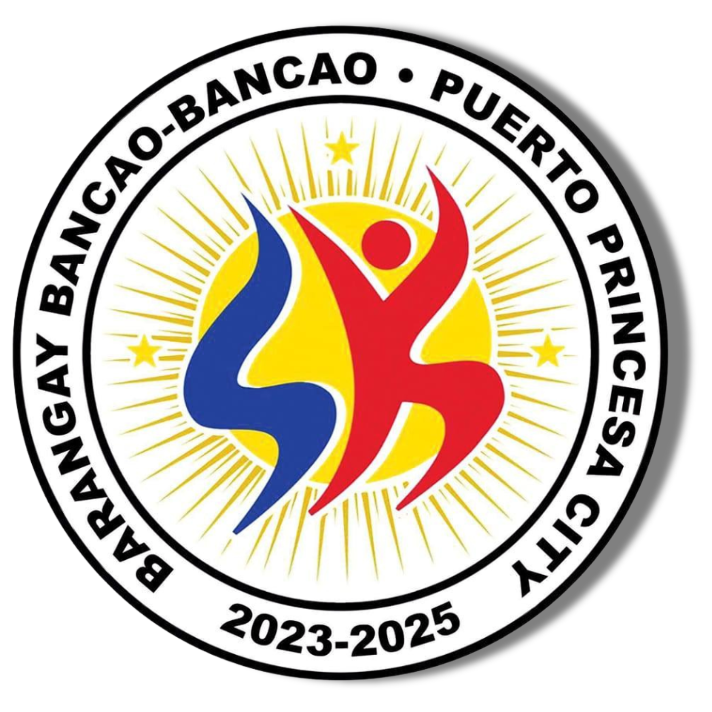
SK Bancao-Bancao
AY 2025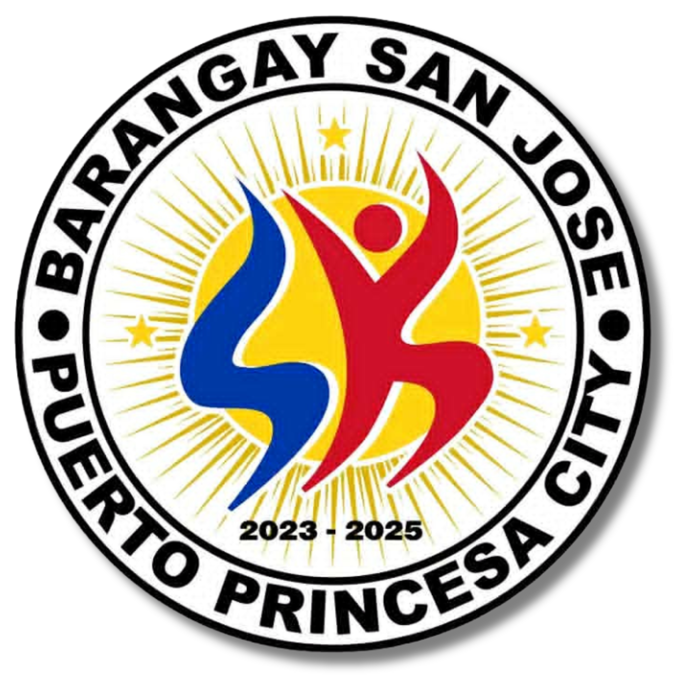
SK San Jose
AY 2025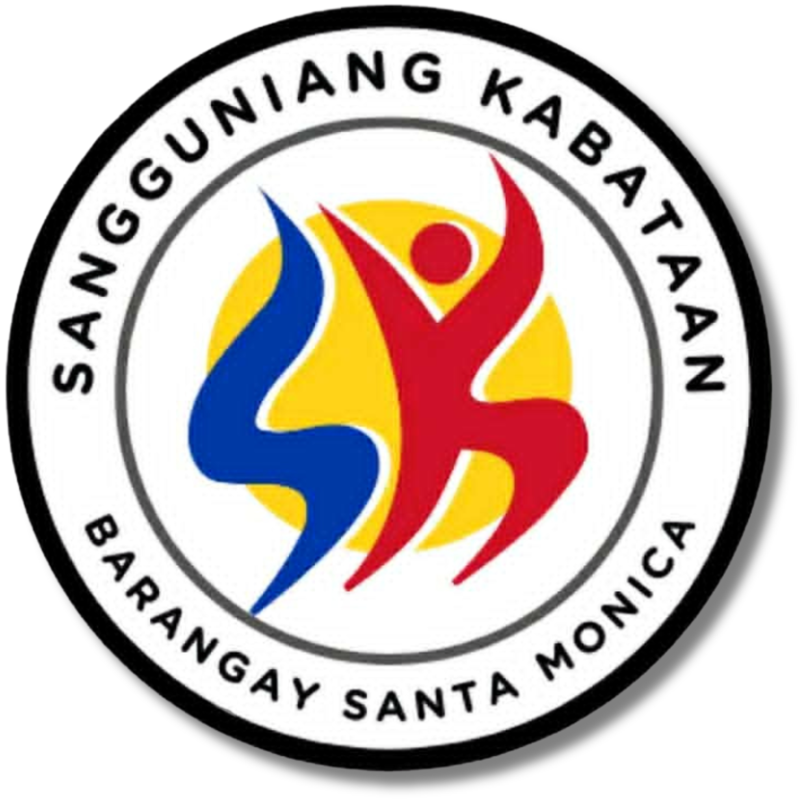
SK Sta. Monica
AY 2025SKonnect
SK Puerto Princesa
Select Barangay to View Accomplishments
SK San Pedro
AY 2025SK Bancao-Bancao
AY 2025SK San Jose
AY 2025SK Sta. Monica
AY 2025SKonnect
10 CENTERS OF PARTICIPATION
EMPOWERMENT
& EQUITY
& SECURITY
CITIZENSHIP
MOBILITY
SKonnect
SK Puerto Princesa
TITLE
| PPAS | Description | Expected Result | Performance Indicator | Period | Annual MOOE | Total Budget | Responsible |
|---|
SKonnect
2025 ACCOMPLISHMENT REPORT
Barangay San Pedro
Say Cheese: TOOTHgether We Smile
A Free Dental Cleaning and Filling (Pasta) program for the youth with 35 beneficiaries aims to promote a Dental Hygiene and education.
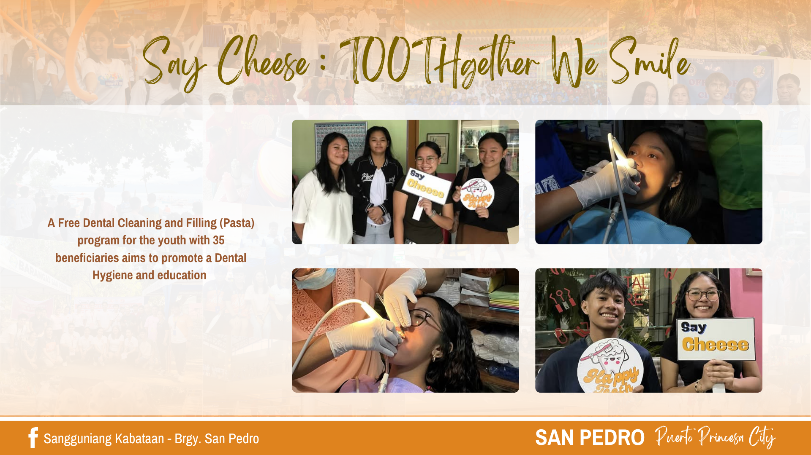
Worktober: Basic Electronics and Home Appliances Repair Livelihood Training
Worktober: Basic Electronics and Home Appliances Repair Livelihood Training, was recently concluded—aimed at equipping participants with essential skills in diagnosing and repairing common household appliances. The session focused on hands-on troubleshooting, enabling trainees to identify and resolve issues in malfunctioning devices. This activity was made possible in collaboration with the Barangay LGU, headed by Punong Barangay Hon. Francisco R. Gabuco, and the Committee Chairperson on Livelihood, Hon. Roland Baldonado.
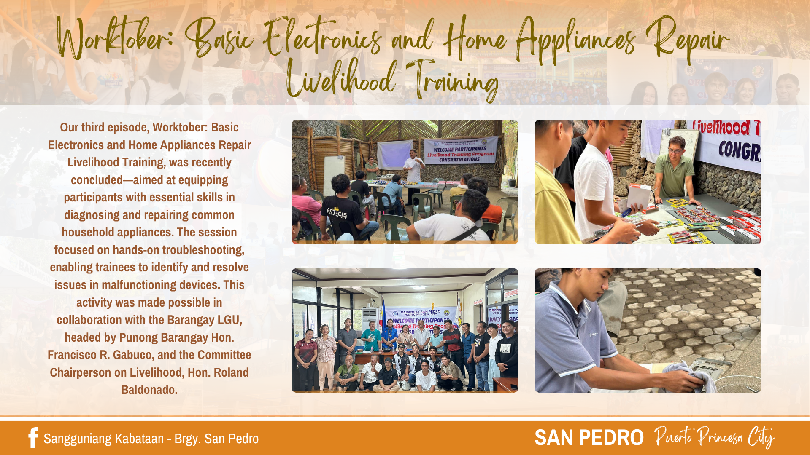
Morning Walk and Coastal Clean Up Drive
Together with Palawan Medical City, the Barangay San Pedro Council, and other stakeholders, the event was held on April 27, 2025, at BM Beach.
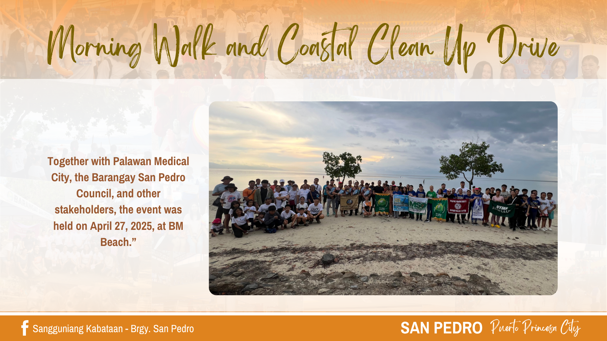
BINULIGAY 2025 Land and Coastal Clean Up Drive
The event was successfully conducted on June 7, 2025, at Purok Abanico, Barangay San Pedro, through the collaboration of the AKAPP Environment Team, CYDO, SPYLA, SPYV, and other youth organizations.
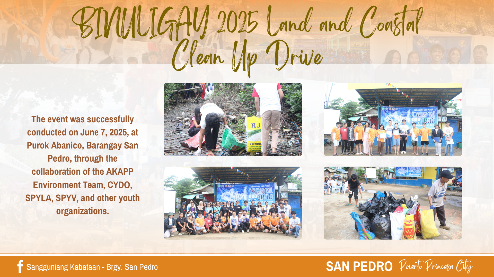
Anti Terrorism, Drug Abuse Prevention and Education Lecture and West Philippine Sea ATIN TO Forum
The said forum was conducted on June 10, 2025 at Brgy. San Pedro Multi-Purpose Hall together with Barangay Council, staffs and Barangay Peace and order personnel.
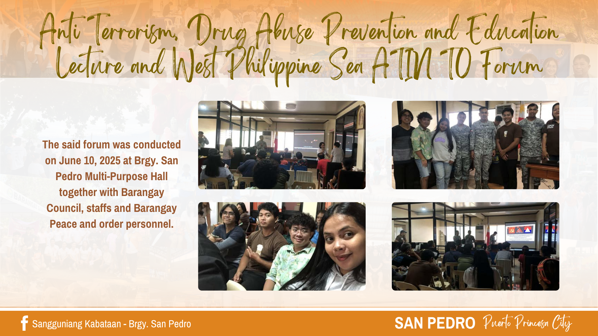
SK Monthly Clean Up Drive
Together with youth volunteers and other youth organizations, the event was successfully conducted on June 20, 2025, at Purok Abanico Coastal Areas.
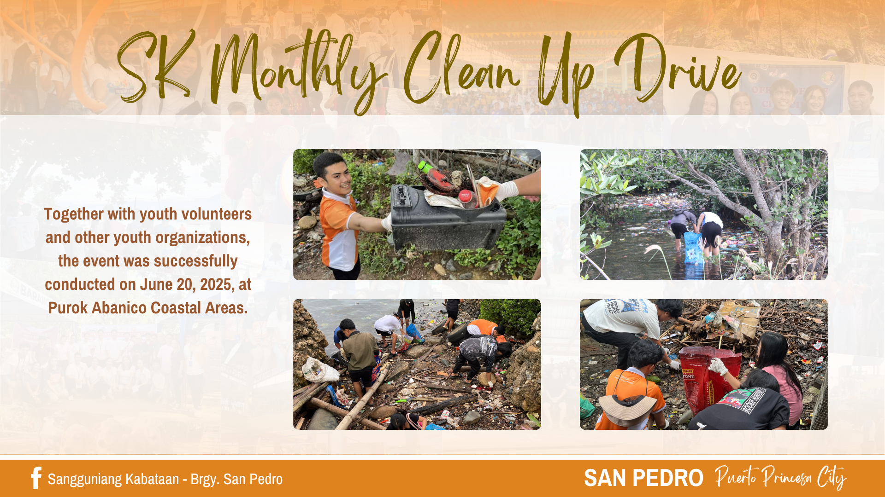
Conduct of KK Profiling for 2025
Conducted by the SK Secretary Karl Capero together with the San Pedro Youth Volunteers on September 7, 2025.
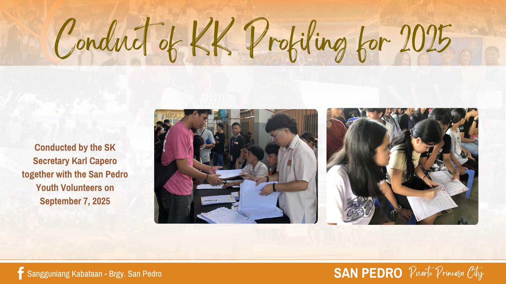
tara, KKape tayo sa ASSEMBLY
Matagumpay nating naisagawa ang tara, KKape tayo sa ASSEMBLY—ikalawang katipunan ng kabataan ngayong taon, nitong Septyembre 7, 2025 sa Loreto-Santos Lanzanas Central School. Sa pagtitipong ito, matagumpay nating naitala at naaprubahan ang 2026 Annual Budget, nailahad ang Accomplishment Report at Financial Report (March 2025–Present), at naipakilala ang Student Assistance Program (SAP). Naipamigay din ang SAP forms para sa mga kabataang nais makibahagi sa programa.
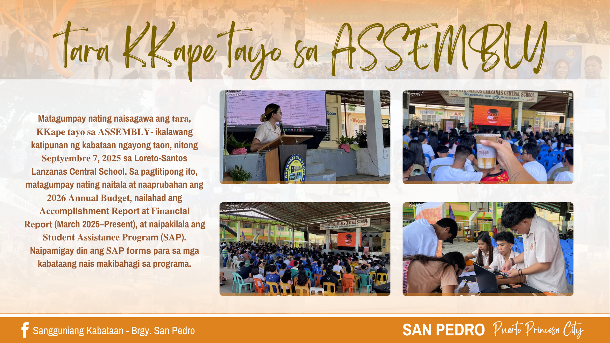
Leadership Style and Ctrl + Alt Del Cyber Harassment Training and Seminar
December 8, 2025 - Building stronger, wiser youth leaders. Today’s sessions on Leadership Styles and Ctrl + Alt + Del Cyber Harassment equipped our SPYLA and SAP participants with knowledge they can use in school, community, and daily life.
Leadership isn’t just a title—it’s part of our everyday lives, reflected in the choices we make and the values we live by. It always starts within ourselves, before it can inspire others. In light of the growing concerns about cyberbullying and online harassment, these conversations remind our youth of the importance of responsible digital behavior and standing up against harmful online actions.
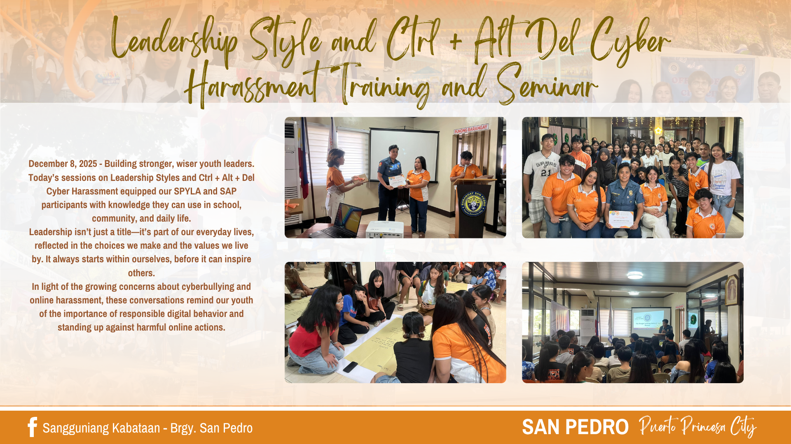